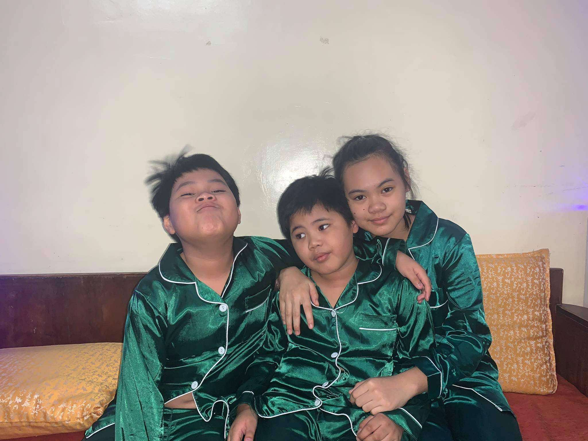
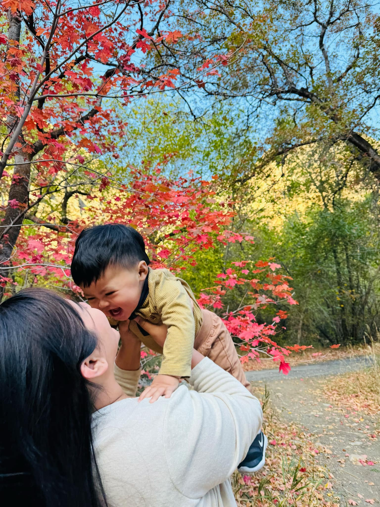

A Filipino mom at Irving, Texas willing to provide equal love and care to your angels.
With over a decade of hands-on experience, I am a dedicated and compassionate nanny specializing in the care of children from infancy through adolescence. My journey has taken me from Los Angeles to Dallas, Texas, where I've had the privilege of supporting families with newborns, including those with special needs such as colic, reflux, gas, tongue-tie, and lip-tie.

As a mother of four, I deeply understand the nuances of childcare and the importance of creating a nurturing environment. My expertise lies in newborn care, and I am well-versed in sleep training techniques, holding a certification as a sleep consultant. I am CPR certified and currently pursuing my Newborn Care Specialist degree to further enhance my skills. I am a strong advocate for establishing routines and draw inspiration from different classes to implement effective childcare strategies. I also have experience with twins and have served as a household manager, organizing nanny schedules and hiring nannies for families.
A few years ago, after nannying for five years, I pursued a degree in business management and worked as a director of operations, managing over 20 stores in the Dallas area. However, I realized that my true passion lies in nannying, leading me to return to this fulfilling career.
In addition to my childcare expertise, I have experience with Montessori-style learning, baby-led weaning (BLW), and meal prepping. I know how to cook a variety of foods, especially Asian cuisine. I can serve as a nanny, household manager, postpartum moms' helper or a mom’s helper in general. I love organizing and reading books, and I am very dedicated to my job.
My career allows me to support my family and kids in the Philippines, who are my backbone and biggest reason for working so hard. I am highly flexible with my time, though I dedicate Sundays to family and church as part of my Catholic faith. I can also be a support for new mothers, providing essential assistance to those who have just given birth. I am looking for a long-term family to work for, not just a job, but an extended family that can see me as part of their family as well. Passionate about my work, I am committed to providing the highest level of care and support to both children and their families. I would love to extend my love and service to you.